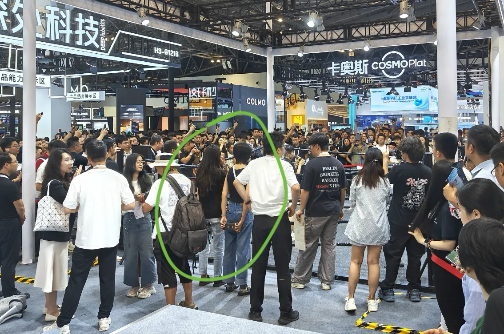

今年 AI 领域似乎格外热闹。从年初的机器人上春晚开始，机器人和具身智能的热度一直就挺高；而今年又被称为 Agent 元年，各种领域的 Agent 如雨后春笋。我作为一个码农，从年初开始就被 AI Coding 各种冲击，同时也身在其中做了一点小事情。这届 WAIC 可能就格外关注这些方面。
本文可能会结合平常的一些经验和这次的见闻讲一些观察或者暴论。
机器人，或者说具身智能?
今年对于机器人，其实一直有争议。首先是春晚的时候，大家先是被「机器人扭秧歌」震惊，然后发现那个手绢儿居然是牵着线在转，大家开始吵。但是不管怎么样，A 股的机器人概念大涨了一波是事实。
后面是四月份的机器人马拉松，各路卧龙凤雏。群众们猛然发现，什么，机器人跑步居然是靠人在后面遥控的？为什么连走路都不会？于是幻想破灭。机器人概念在 4 月份回调了不少。
然后这次 WAIC，在消息面上，先有智元机器人和宇树科技成功中标中国移动项目，后有宇树科技准备上市。机器人的热度自然很高。到了场馆也不出所料的火爆。各家机器人都在一楼的「技能大舞台」秀肌肉。刚看到确实有点穿越到未来的感觉。我也比较好奇，参展的机器人的能力做到什么程度了，哪些场景已经用上了。
个人看法：从能力上看，在展的大部分机器人远未到「具身智能」的程度。
但是感觉一些厂商似乎在「用形态偷换智能概念」，试图塑造一种「人形机器人等于具身智能。我们家机器人是人形的，所以我们家就是在做具身智能」的等式关系。一楼「技能大舞台」里那些单一职能、预设编程（勉强有一两个步骤可以有一些小决策，比如倒咖啡），智能程度其实比较堪忧。然后做成人形，还要穿上工作服，戴个帽子。感觉还是有点过于刻意了。
另外还有就是，这波机器人的热度和大语言模型的热度又重合了，于是群众天然可能就会预设，今天的智能机器人是不是用了大语言模型甚至是多模态大语言模型在驱动机器。其实也不是，绝大多数参展的机器人也没做到这一步。就算做到了，这个模型也不在端。但是不管，反正就是火了。
外行人看热闹。内行人看门道。虽然机器人行业的各项技术都在稳步发展，但还是跟大众的预期相差太远。然后你长篇大论跟用户说：我们动态平衡做得好，我们环境感知，我们小脑怎么样怎么样。用户说：你说那么多字不是在偷偷骂我吧，不管了，去看宇树科技的 G1 打拳击。
所以也难怪有一些厂商会选择为了展示效果而「藏遥控器」。大家喜欢看热闹，那看好了。
说回来应用场景，问了几个展商，你们人形机器人的应用场景是什么。有一个关键词非常高频：「展厅」。可能在国企展厅搭配一个人形机器人做引导讲解是 2025 年的时尚单品。

Vibe Coding，不只在拷问通义灵码
上半年 Vibe Coding 真的非常火。早在去年 12 月的时候，一些机构的研报已经有「AI 编程产品的 PMF 思路成熟度高，后续伴随模型性能提升逐步打开市场」的洞察了。今年 Cursor 挟 Claude 之威证明了这一点。于是各路人马纷纷下场。很热闹。
到 2025 年中的现在，可以说 Vibe Coding 已经是一个「行业显学」了。如何做一个 Coding Agent，具备哪些基础能力、要覆盖哪些功能，用通义灵码 PDSA 的话说「能力宽度上大家都差不多」。这个话跟「我们 XXX 产品已经基本具备和 Cursor 一样的能力」的意思其实差不多，但听起来更谦虚且更顺耳一些。但是在用户看来，Cursor 就是现在最好用的 Coding Agent 产品。其他产品不管吹得多厉害，使用体验上感觉总是有差距。所以你们厂商哪来的脸说跟 Cursor 差不多。所以我觉得我的这段话也会被喷：「行业显学」？行业显学你怎么不做个 Cursor 或者 Trae 出来。
在问及通义灵码与 Cursor、Trae 的差异时，PDSA 说，Cursor 和 Trae 主要面向 C 端，而通义灵码主要是在做 B 端的生意。交流下来得到了一些之前没有的感知：
首先是 to B 还是 to C。个人感觉 AI Coding 的 PMF 虽然在海外能跑通，但是在国内可能未必。比如我感觉国内码农可能未必愿意为 Trae 付费。可能做 to B 是对的。
其次是「有」和「好」的关系。AI Coding 做 to B 的生意，主要还是提供 AI Coding 的各种能力与套件，以让 B「用起来」为主。所以「有」会更重要。我问了一下会不会帮 KA 建设知识库、优化知识库等。得到的答案是否定的：这是下个阶段的事情，现在大部分的 B 都还是在「用起来」的阶段，B 自己可能还没太解决知识体系结构化的问题。
最后是通义灵码的产品价值部分。灵码之前是主打插件。6 月份开始 IDE 也在逐渐做起来。这里其实有个灵魂问题：在 AI Coding 领域，基模和工程的关系是什么。AI Coding 产品层的空间和价值在哪，如果说 AI Coding 产品的价值完全来源于基模，那么产品层是不是摆摆烂等底模进化就好了。
但是直观感受上，就算有些 AI Coding 产品切了 Claude 模型，使用起来从体验到效果就是跟 Cursor 有差距。甚至会有客户问，那我能不能买 Trae 然后用 Qwen 3 Coder。说明在客户的感知里，AI Coding 的产品层存在着与基模正交的评价体系。基模只会输出 token，AI Coding 仍然需要靠工程和产品完成价值交付。
通义灵码的同学说，因为背靠阿里，有很多同学日常在用，所以可以收集到很多用户的反馈来持续改善产品体验。肯定还是有模型能力之上的更多价值。但也坦言这个确实是个问题，目前也没有很好的评价方式。间接的可能可以从效能上看，比如使用了 AI Coding 产品后，交付的吞吐是否有提升。从 benchmark 上看，AI Coding 产品好像还没形成像跑一下什么 Aider、SWEBench 之类的 benchmark 的习惯，所以还是很难量化说，AI Coding 的产品层，在 Coding 领域，在基模之上能给用户和客户带来多少增益价值。
因为前端也在做自己的 Coding Agent。我觉得一定程度上，AI Coding 的产品不能满足于「显学」层面的能力宽度覆盖，还是要在企业内部，或者一些垂的场景做一些工具链优化和打磨，也要帮企业内部把到端的代码生成质量做好。同时也需要有一套评价体系去讲清楚我们自己做的 Coding Agent 跟其他产品之间的价值，所以这块我们会持续关注。
另外有个洞察就是，业内认为 bolt.new 和阿里巴巴 oneday 类似形态的产品，也属于广义的 AI Coding 产品。它们在基础设施上是很类似的，只不过面向的人群不同。
AI 眼镜，我可能唯一能接受的可穿戴设备
去 Rokid 展台逛了一下。我本来以为可以现场下单的，被告知没有。
体验了一下 Rokid 的 AI 眼镜。拿在手里的时候视野正中的显示区域还是挺明显的。但是戴上去之后对视野基本没有影响。实际使用的时候，在视野的下方会有单色的显示屏。有时间、电源、功能啥的。内容比较小。我近视 + 散光，所以看不太清。对面的人是看不见这些东西的。
体验了实时翻译的场景。本来这里是个老外，老外休息去了。换了 rokid 自己的小姐姐。设计的情形是这样的。我说中文，老外说英文。我能在屏幕上看见对应的中文。跟看英文电影开字幕一样。
翻译的延迟还可以。rokid 眼镜本体并没有智能。翻译和扫码支付的能力其实都是在手机上跑的。所以感觉还是手机再加一个在眼镜上的屏。我其实是不太理解智能手表的，所以我的 Apple Watch 一直在吃灰。但是我感觉 AI 眼镜还是比手表可能会方便一些的。由于是挂在眼镜上，不会感觉我额外带了一个设备。如果功能和场景挖掘得足够好的话，市场可能比手表大。
我感觉如果未来某一天 AI 眼镜如果延迟做得足够低，智能化程度足够高的话，有可能让我们的生活变得像现在 Vibe Coding 的代码补全一样，我刚张嘴，AI 眼镜就显示我应该如何得体的把想说的话说完。
这里插一句莫名其妙的引文。
在漫长的历史长河中，人类的感性认识方式是随着人类群体的整个生活方式的改变而改变的。
--- 《机械复制时代的艺术作品》/〔德〕本雅明
行业展台，生态都在繁荣些什么
最后是行业展台看到的一些创业公司。震惊之余确实也感受到了一股勃勃生机万物竞发的境界：
首先是 RWKV。因为一开始看见他们展板上写的「全球领先的大模型架构公司」，我一度误解为是给科技公司做大模型架构解决方案的咨询服务商什么的。问了才知道其实不是，他们主打的就是推广 RWKV 这个架构和模型，这是一种新型的 RNN 架构。我只知道 RNN 是个循环神经网络，更具体技术细节就说不上来了。但是展示的几个 Demo 还是挺好玩的。比如说 1.5B 就能在端侧跑的一个多模态对话。还是挺有意思的。
做 Agent 的公司有好几家：
比如做 AI 智能客服的 3Chat。0 配置搭建智能体，录入行业专家模型。这个跟去年我们开源的 petercat 的赛道类似，只不过我们当时想做的是基于开源仓库的 Q&A，他们主打了营销留资复购的售前行业。
还有做营销行业内容创意 Agent 的数宗。他用多模态知识图谱 + 大模型，做品牌分析、策略创意、市场洞察类的 Agent。其实也不是 to C 的，是给 4A 公司、品牌方和营销机构辅助做营销案例用的。 我感觉这类公司主要靠的是背后的行业客户资源和内容积累沉淀。Agent 用来做行业知识产品化。
还有专门做 AI Agent for Jupyter 的雾角科技。感觉赛道实在太小众了，客户真的有付费意愿么？
有两个公司印象比较深刻。
一个是未亓科技（用生僻字做公司名字有点冒险），用 ComfyUI 做演出场景、沉浸式空间场景的音画互动的。搞了个一体机，用户可以把一体机搬到演出现场，插上投影，像 DJ 一样操作提示词和调参，然后做很绚的舞台光影场景。这个是行业 +AI 玩出花来了。
还有是「非常无线」，做硬件的，给农机、无人机插一个 4G 模块，就可以把设备变成 MCP，就可以用 Agent 控制这些设备，规划行程、执行任务。延迟大概 100ms。我问了个问题，工业农业场景的客户对 Agent 的信赖程度怎么样。答曰：「会好的」。
看下来会觉得，在 2025 年，做 AI Agent 好像真的没什么技术壁垒。谁都能做出来一个还像那么回事的 AI Agent。看到的大部分 AI Agent 公司都是做行业的知识 + 大模型的形式。
但是我无法判断，这样的形式能带来多少的溢价。可能跟行业数据壁垒、市场需求和技术深度都有点关系吧。
Final. AI 时代的人机交互界面随想
这一段加得有点生硬。是之松老师的命题作文。
聊到人机交互的未来，今年有个现象特别有意思，甚至有点?反常?——CLI 的意外复兴。
我承认我是不太喜欢 CLI，因为 CLI 也是一种界面，它的使用体验极大取决于开发者的服务意识，而极客的服务意识一般比较差，他们只管自己用得爽 :D。
今年 Vibe Coding 彻底改变了游戏规则。当大模型强大到能以极高的成功率（pass@1）一句话搞定需求时，大家突然发现，是不是不需要做一个那么复杂的 IDE 也能完成编码任务了。
但是，2025 年的 CLI 已经发生了对传统 CLI 的范式的背叛：不再需要用户去背命令，按规定输入，而是一定程度朝自然语言的输入去发展。用户的 GUI 输入可以简化成一句话的文本输入。这可能确认了另一个趋势：用户的输入会越来越简单自然。可能不再需要去预定义 CLI 格式、GUI 布局这些严格的输入范式。
这可能是未来人机交互的第一个趋势：交互的?去范式化?与?意图驱动?。用户不再需要去适配机器预设的、固定的界面。无论是 CLI 的自然语言化，还是 GUI 根据用户的背景、熟练度、甚至情绪实时调整布局甚至生成。其核心都是让机器主动来理解你的?意图?。
但是这里我还是要说，我是不支持「GUI 消失论」的。因为我认为未来人机交互的第二个重要趋势是多模态与跨模态协同。想象一下你在会议室里是怎么跟 PD 吵架的，说急了是不是还要站起来在白板上画草图，连画图带喷的把事情讲清楚。你急的时候，语言、语音、图形、动作所有的模态都用上了。信息密度和沟通效率达到了顶峰。这个肯定也是必然趋势。未来你跟家用机器人沟通的时候，手势、语音，甚至画个草图给它都是有可能的。它也有可能搞个投影什么的跟你讲清楚计划。
所以，我的结论是。AI 时代的人机界面并非要走向某个极端，而是会变得更自由、更适应也更自然。